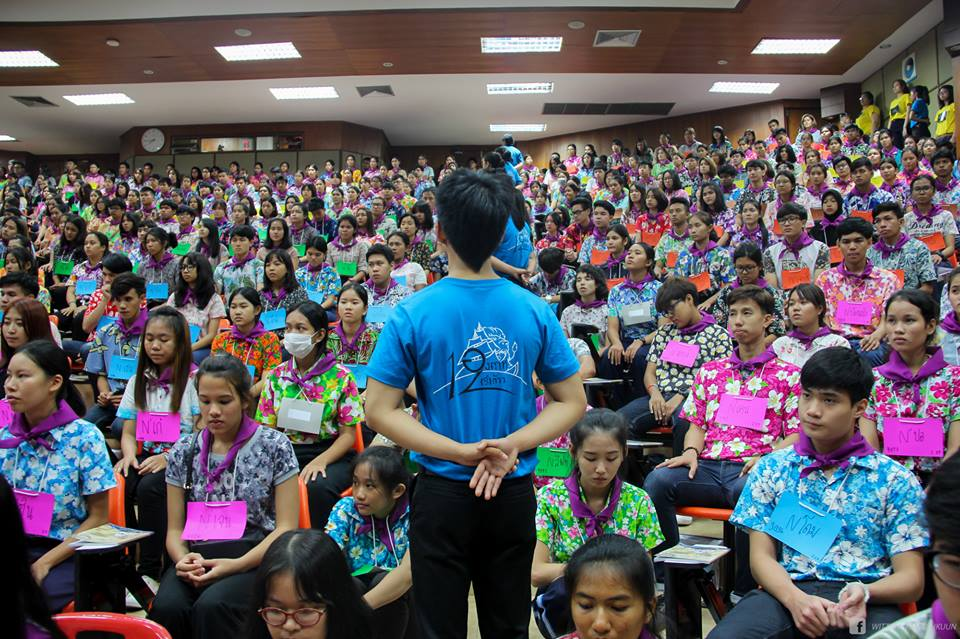

การเริ่มต้นชีวิตในมหาวิทยาลัยของพวกผมเริ่มต้นด้วยการเข้ามาอยู่ในหอพักในมหาวิทลัยเพื่อเตรียมเข้าค่ายสานใจเป็นระยะเวลา 3วัน วันแรกที่มาอยู่ในหอค่อนค้างดีเพราะห้องที่พักอยู่จองพร้อมเพื่อนที่อยู่โรงเรียนเก่าด้วยกันทำให้ไม่ต้องไปทำรู้จักกันใหม่ ไม่ต้องรู้สึกอึดอัดเพราะอยู่กับคนที่ไม่รู้จักกันแต่ยังไม่ค่อยรู้เส้นทางในมหาวิทยาลัยมากไม่รู้ว่าร้านข้าวร้านไหนอร่อย วันแรกก็เลยลองกินข้าวล่างหอดูราคาก็ถูกดีแต่ไม่อร่อย กินเสร็จก็กลับมาหมกตัวในห้องเพราะไม่รู้ว่าจะไปไหนดีก็กลับมาจัดของให้เข้าที่เข้าทางแล้วก็เข้านอนเพราะพรุ่งนี้ต้องเข้าค่ายแต่เช้า.
ตื่นเช้าวันต่อมาก็ต้องตามเพื่อนไปที่ลงทะเบียนเข้าค่าย เพราะไม่ค่อยรู้ทางไปคนเดียวอาจเดินหลงได้เมื่อไปถึงเค้าก็จัดให้อยู่เป็นโซนผมได้อยู่โซน 3 อีกคนได้โซน 9 ซึ่งเป็นคนละโซนกับเพื่อนช่วงแรกก็นั่งเฉยๆไม่สนใจเพื่อนๆในโซนเท่าไหร่ทักทายกันปกติ คุยกันนิดหน่อย พอถึงช่วงพักเค้าก็ให้พูดคุยทำความรู้จักกันมากขึ้นก็ได้รู้จักชื่อเพื่อนพยายามจำชื่อแต่ละคนให้ได้(ถึงปัจจุบันนี้จะลืมไปหลายคนแล้วก็ยังมีจำได้บางคน)หลังจากนั้นก็ต้องใช้เวลาในการปรับตัวอยู่นานมากที่เดียวกว่าจะเข้ากับเพื่อนในค่ายได้โดยรวมในแต่ละวันก็พูดคุยทำความรู้จักคนอื่น ทุกอย่างในค่ายก็วนลูบไปเรื่อยๆแล้วค่อยมาเฉลยกันทีหลังและมีการแนะนำตัวของพี่ๆแต่ละคนโดยรวมแล้วก็ได้รู้จักสนิทกับเพื่อนในโซนมากขึ้นแต่ยังไม่รู้จักคนที่สาขาเดียวกันเลยซักคนตอนมืดก็มีให้ไปให้รุ่นพี่ที่ชอบที่สนิทผูกข้อมือให้ และทำความรู้จักกันนิดหน่อยแล้วสุดท้ายก็ส่งกลับหอกันในที่สุดก็จบซักที.
